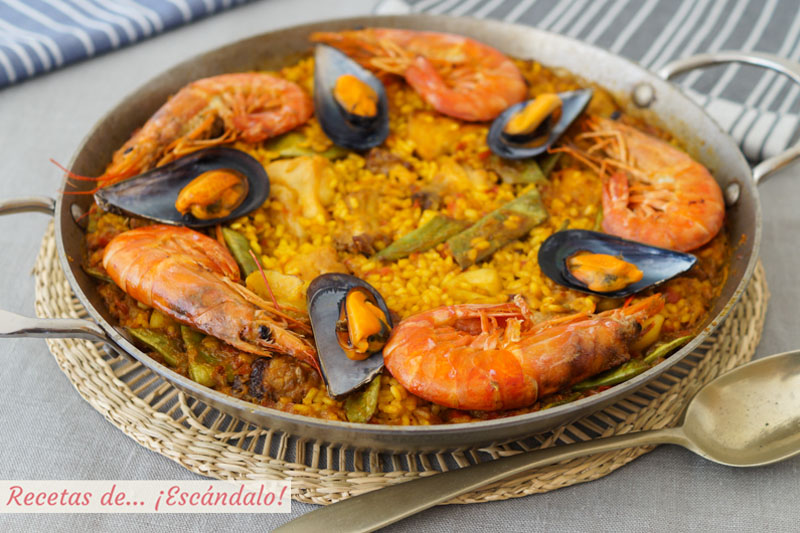

Paella Mixta
Mixed paella is an emblematic dish of Spanish gastronomy that combines the best of the sea and land in an explosion of flavors and colors. This recipe traditionally includes a mix of fresh seafood, such as prawns, mussels and squid, along with land-based ingredients such as chicken, rabbit or pork. Accompanied by bomb rice, fresh vegetables and a careful selection of spices, mixed paella is a delicious representation of the culinary richness of the Mediterranean region. Here is a recipe to prepare this feast of flavors in the comfort of your kitchen.
Preparation time
- Total: Approximately 35 minutes
- Preparation: 10 minutes
- Cooking: 25 minutes
Instructions
- In a large paella pan or frying pan, heat a little olive oil over medium-high heat. Add the chicken and chorizo, and cook until golden brown on all sides. Remove and reserve.
- In the same paella pan, add a little more oil if necessary and sauté the onion, garlic and peppers until tender and fragrant.
- Add the grated tomatoes and cook for a few minutes until a thick sauce forms.
- Add the mussels and prawns to the paella pan. Add the rice and stir well so that it is infused with the flavors of the ingredients.
- Pour the hot broth over the paella and add the saffron or food coloring. Adjust salt and pepper as necessary.
- Let the paella boil over medium heat for about 10 minutes. Then, reduce the heat to medium-low and place the squid and peas on top of the rice.
- Continue cooking the paella for about 15-20 more minutes, or until the rice is tender and has absorbed most of the liquid. Make sure not to stir the paella too much while it cooks so that the rice forms a delicious crispy layer on the bottom, known as "socarrat."
- Once the rice is cooked and the seafood is pink and cooked through, remove the paella from the heat and let sit for a few minutes before serving.
- Serve the mixed paella hot, garnished with a few sprigs of fresh parsley and accompanied by lemon wedges to squeeze over the rice if desired.
Ingredients
- 300 grams of bomb rice
- 300 grams of mussels
- 300 grams of prawns or shrimp
- 200 grams of squid, cleaned and cut into rings
- 200 grams of chicken breast, cut into pieces
- 100 grams of chorizo, cut into slices
- 1 chopped onion
- 2 cloves garlic, minced
- 1 red pepper, cut into strips
- 1 green pepper, cut into strips
- 2 ripe tomatoes, grated
- 1 liter of fish or chicken broth
- 1/2 cup peas Saffron or food coloring
- Salt and pepper to taste
- Extra virgin olive oil
| Calories | about 350-400kcal |
| Carbs | 40-45g |
| Protein | 20-25g |
| Fat | 10-15g |